Wrzuty
Wrzuty- każdy je widział i to one stanowią niekiedy symbol kultury bazgrołów. W tej formie zawierają one zwykle najwiecej kolorów i popisowych elementów stylu autora. Wrzuty są tą formą, w którą zwykło się wlewać najwięcej czasu, wysiłku i pomysłowości.
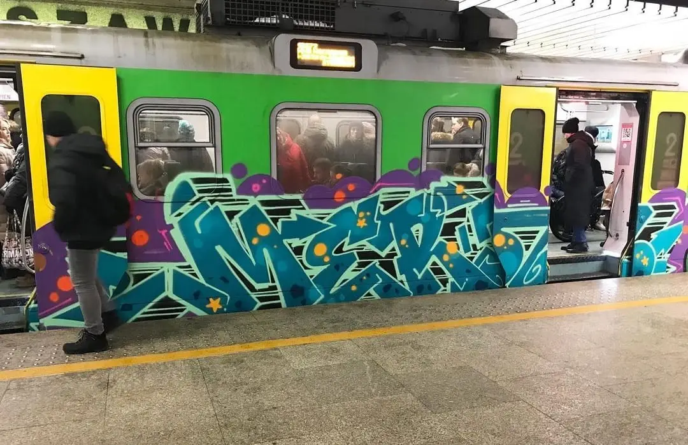
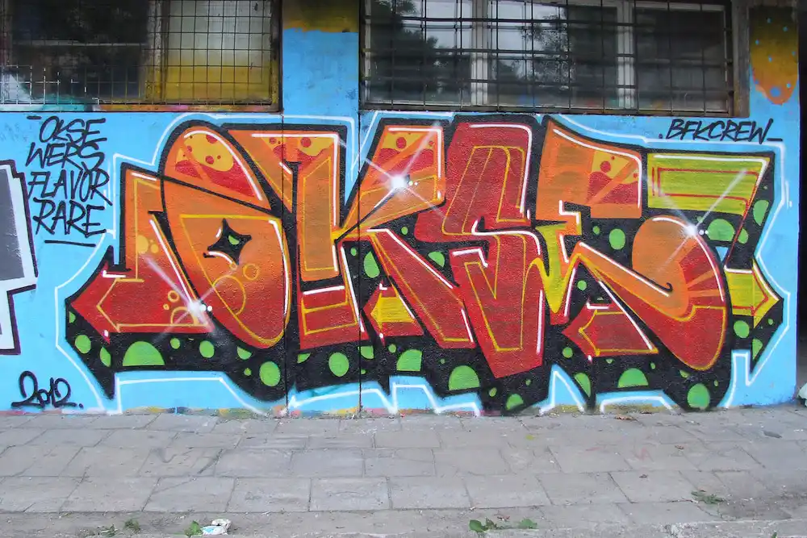
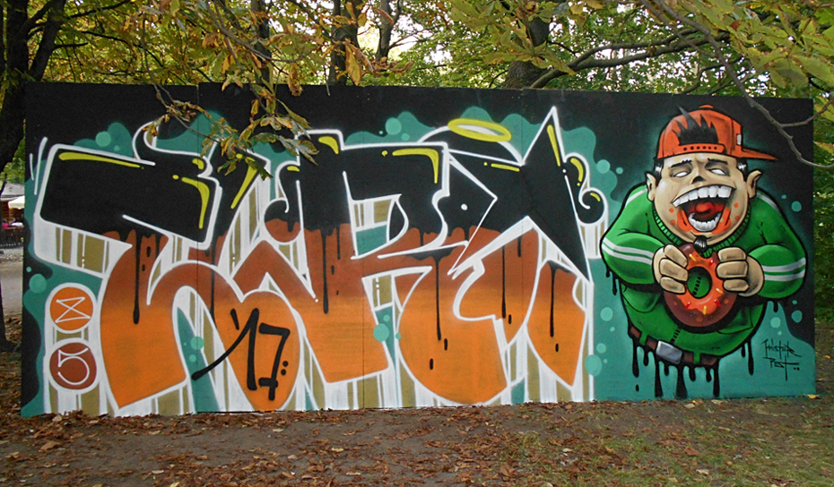
"Charactery"
"Character" w kulturze bazgrołów to termin nazywający stworzoną postać. Słowo to domyślnie oznacza stylizowaną, lub nawet karykaturalną postać/twarz, która stanowi dodatek do rozpoznwalności twórcy, choć niektórzy tworzą też wyłącznie charactery.
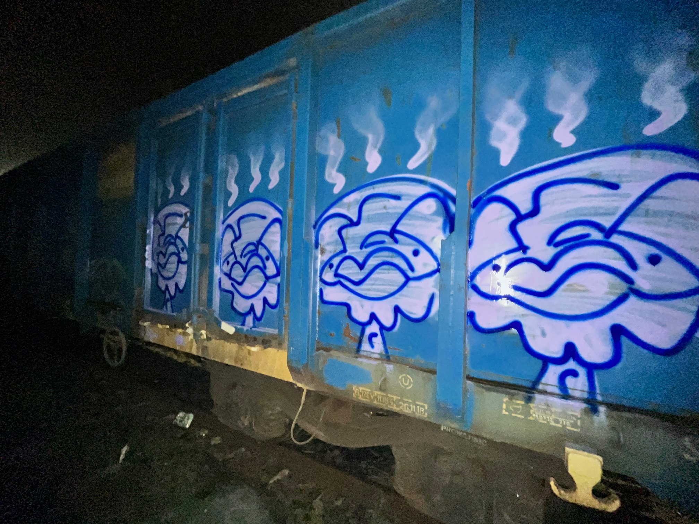
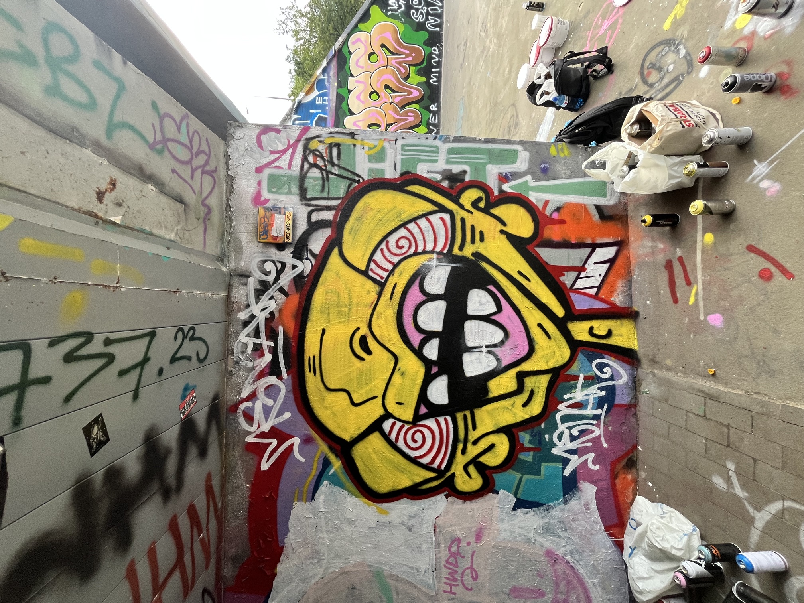
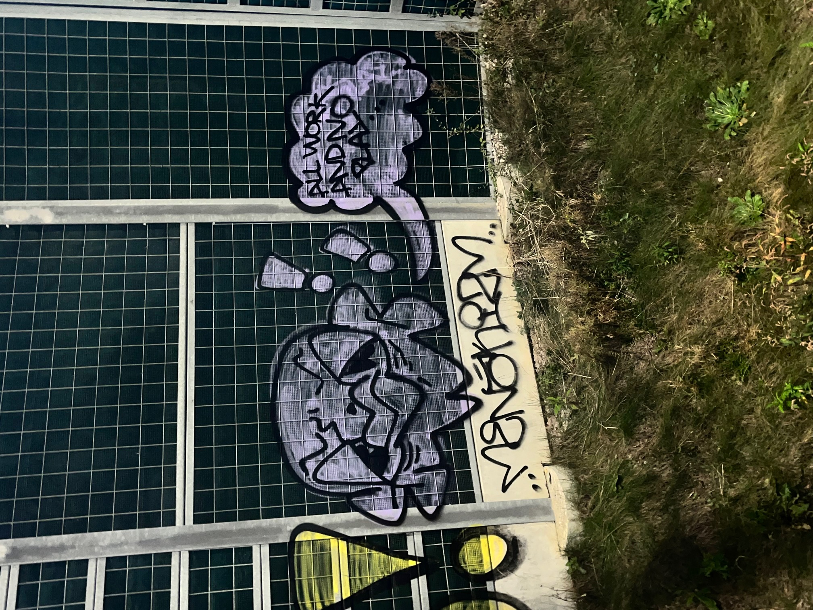
Chromy
Chrom sam w sobie oznacza, że litery wypełniono srebrną farbą. W praktyce jednak chrom bywa potoczną nazwą na style wykonane pod presją czasu, a zatem i prostsze i lubianego, srebrnego koloru.
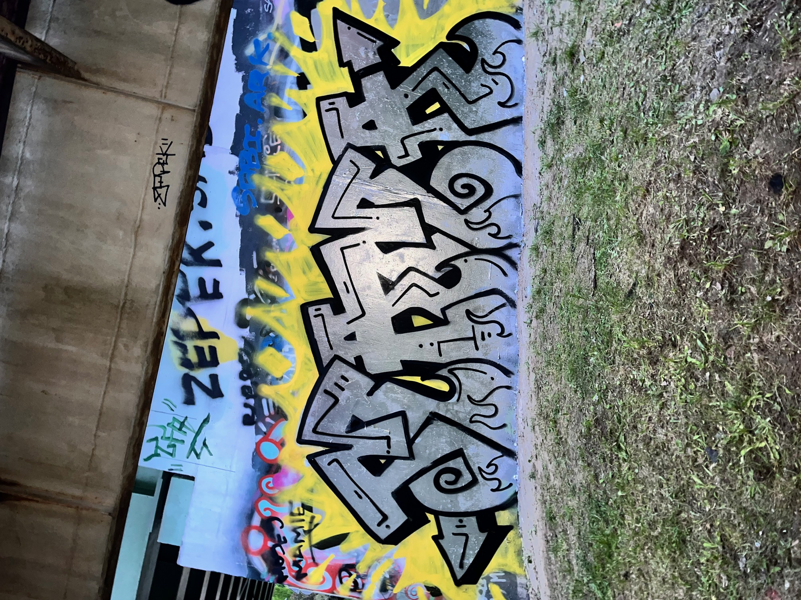
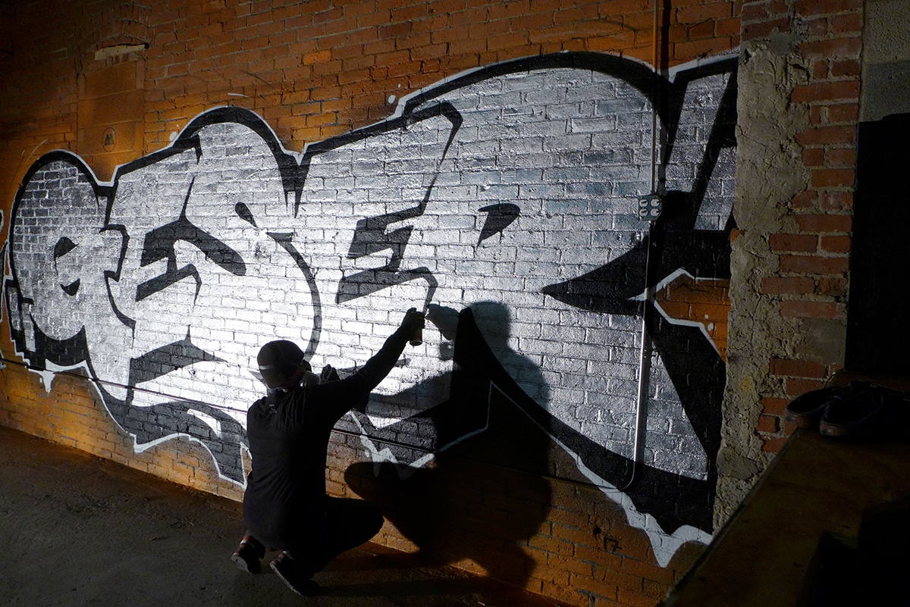
Throw-upy
Throw-upy to szybka, prosta forma bazgrołów, którą można rozpoznać po krągłych kształtach liter, które składają się z 2 elementów- wypełnienia i obrysu. Są one także często wybieraną formą gdy twórce goni czas.
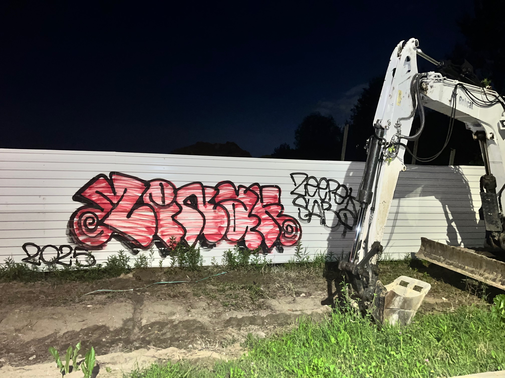
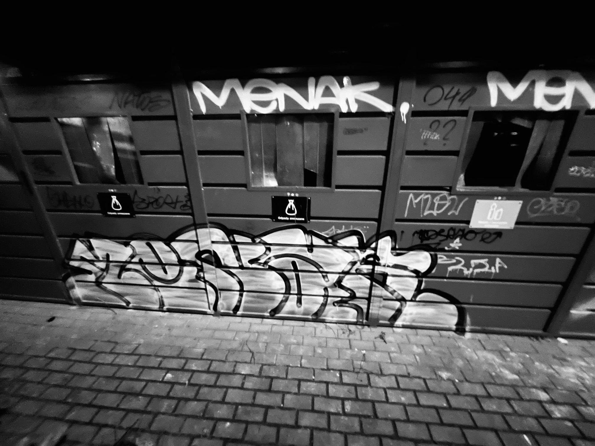
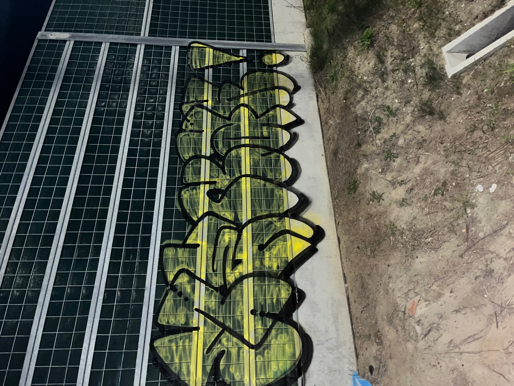
Tagi
Tagi to najprostsza, i przez to najliczniejsza forma bazgrołów. Jest ona stylizowaną przez twórcę formą pisma ręcznego, choć może powstać z pomocą najróżniejszych narzędzi. Przez jej prostą formę zwykłe napisy w przestrzeni publicznej również bywają widziane jako bazgroły, bądź właśnie tagi.
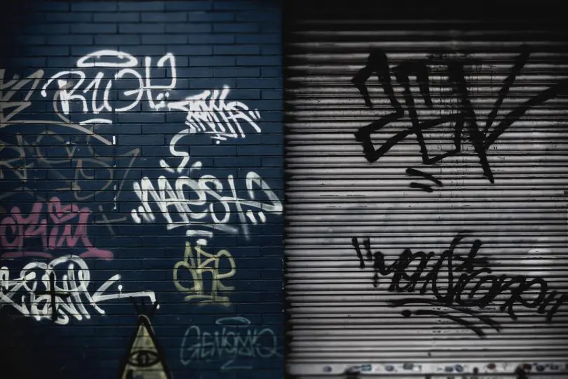
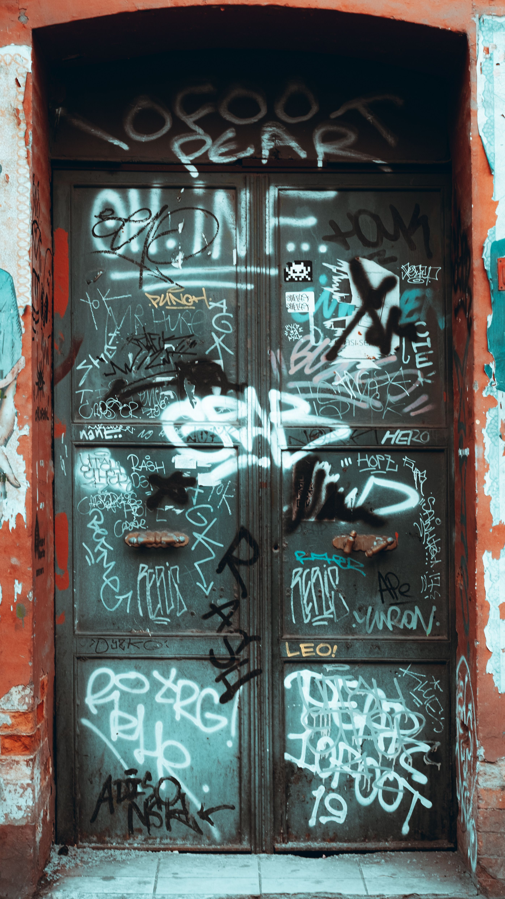
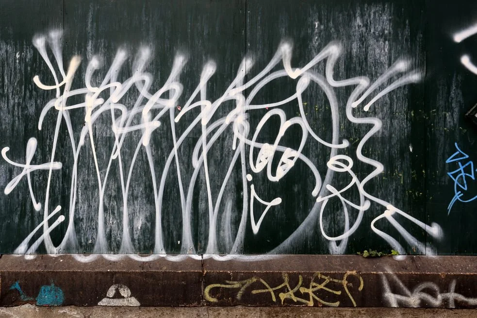